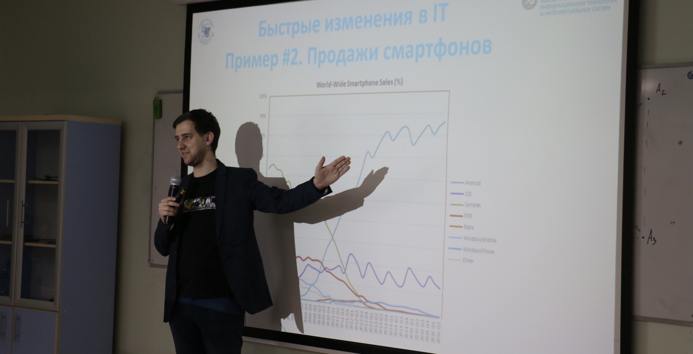

ItIsLabs/лаборатории ИТИС'а
Начиная со 2 курса студенты проходят проектную работу и практику под руководством ведущих специалистов ИТ-компаний, работают над исследованиями и разработками в лабораториях, созданных ИТ-бизнесом и ИТИС. Сегодня функционирует более 20 подобных лабораторий, среди них: Mobile Lab, Digital Media Lab, Лаборатория интеллектуальных робототехнических систем, Smart Education Lab, Data Lab, Cloud Lab, Web Lab, Mentor Lab, 42 Lab, FlatStack Lab, BARS Group Lab и другие.
